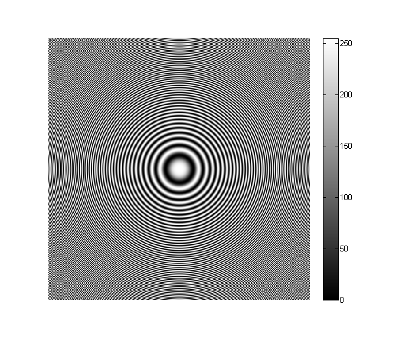
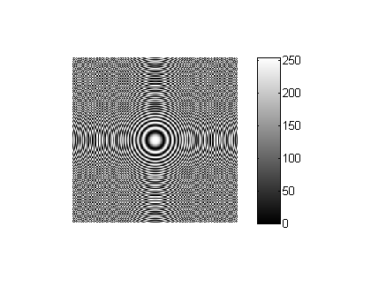
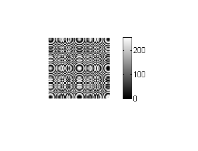
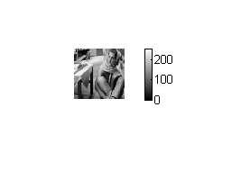
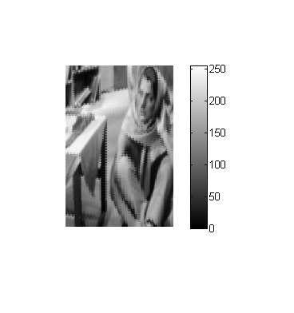
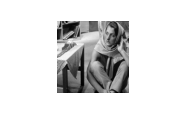
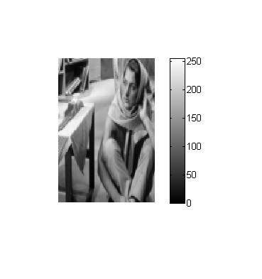
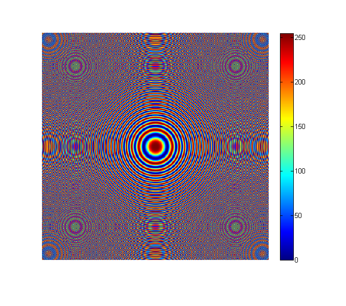
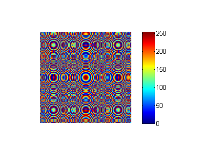
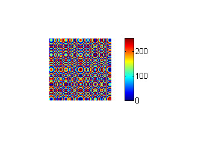

a='../data/circles_concentric.png';
b=imread(a,'png');
figure('Name', 'Input-myShrinkImageByFactorD(d=2,3)'),imshow(b);
colorbar;
c=myShrinkImageByFactorD(b,2);
c=uint8(c);
figure('Name', 'Output-myShrinkImageByFactorD(d=2)'),imshow(c);
colorbar;
save ('../images/circles_concentric1.mat');
d=myShrinkImageByFactorD(b,3);
d=uint8(d);
figure('Name', 'Output-myShrinkImageByFactorD(d=2)'),imshow(d);
colorbar;
save ('../images/circles_concentric2.mat');
e='../data/barbaraSmall.png';
f=imread(e,'png');
figure('Name', 'Input-myBilinearInterpolation'),imshow(f);
colorbar;
g=myBilinearInterpolation(f);
figure('Name', 'Output-myBilinearInterpolation'),imshow(g);
colorbar;
save ('../images/barbaraSmallBi.mat');
figure('Name', 'Input-myNearestNeighbourInterpolation'),imshow(f);
h=myNearestNeighbourInterpolation(f);
figure('Name', 'Output-myNearestNeighbourInterpolation'),imshow(h);
colorbar;
save ('../images/barbaraSmallNearInt.mat');
figure('Name', 'Input-myShrinkImageByFactorD(d=2,3)-jet colormap'),imshow(b);
colormap jet;
colorbar;
figure('Name', 'Output-myShrinkImageByFactorD(d=2)-jet colormap'),imshow(c);
colormap jet;
colorbar;
figure('Name', 'Output-myShrinkImageByFactorD(d=3)-jet colormap'),imshow(d);
colormap jet;
colorbar;
Warning: Size input contains non-integer values. This
will error in a future release. Use FLOOR to convert to
integer values.
Warning: Size input contains non-integer values. This
will error in a future release. Use FLOOR to convert to
integer values.
         